|
|
| red seaweeds text index | photo index |
| Seaweeds > Division Rhodophyta > Crunchy pom-pom red seaweeds |
| Thick
crunchy pom-pom red seaweed Family Galaxauraceae updated Oct 2016 Where seen? These pinkish crunchy pom-poms are often seen on our Southern shores, growing among living corals, or on rubble near living reefs. Usually seen alone, not forming carpets or covering large areas. Features: A bushy cluster (3-6cm) of many stiff, thick, cylindrical 'stems' that are regularly branched. The 'stem' tips with blunt rounded tips often with a darker pink dot at the tips. The spherical bushy shape may be dense or rather loose. The seaweed incorporates calcium carbonate making the 'stems' hard and brittle.Colours pink, dark pink to maroon. Tricleocarpa cylindrica has rings around the 'stems'. May be confused with other pinkish seaweeds with a pom pom shape. |
 Cyrene Reef, Oct 07  Rings around the 'stem', tips rounded with dark spot. |
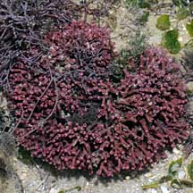 Cyrene Reef, Jun 07 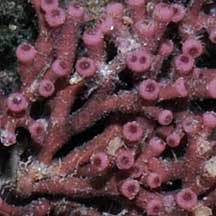 Darker pink dot the tips of the 'stems'. |
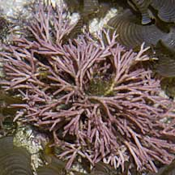 Lazarus Island, Feb 11 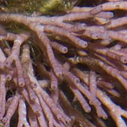 |
*Seaweed species are difficult to positively identify without microscopic examination.
On this website, they are grouped by external features for convenience of display.
| Thick crunchy pom-pom red seaweeds on Singapore shores |
| Photos of Thick crunchy pom-pom red seaweeds for free download from wildsingapore flickr |
| Distribution in Singapore on this wildsingapore flickr map |
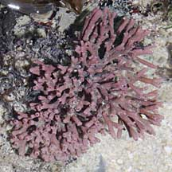 Pulau Senang, Aug 10 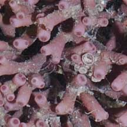 |
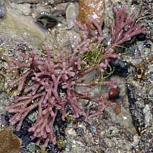 Pulau Biola, Dec 09 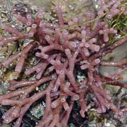 |
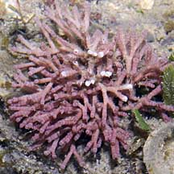 Terumbu Berkas, Jan 10 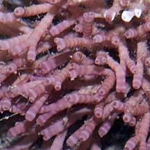 |
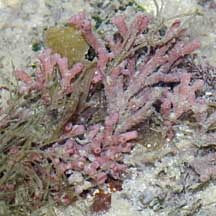 Pulau Pawai, Dec 09 |
| Family Galaxauraceae recorded for Singapore Pham, M. N., H. T. W. Tan, S. Mitrovic & H. H. T. Yeo, 2011. A Checklist of the Algae of Singapore.
|
Links
|